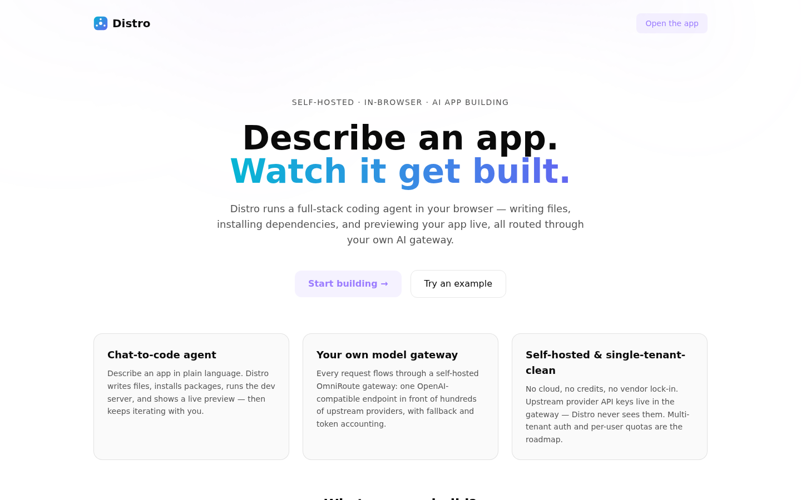
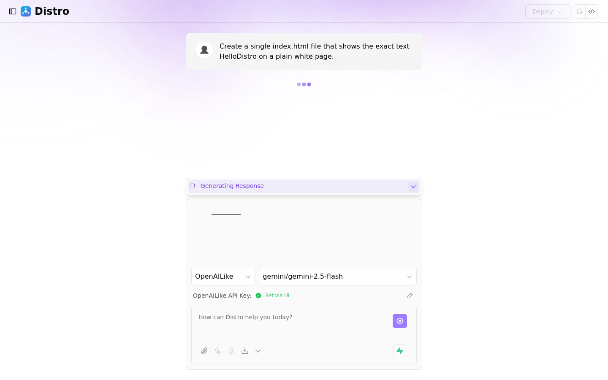
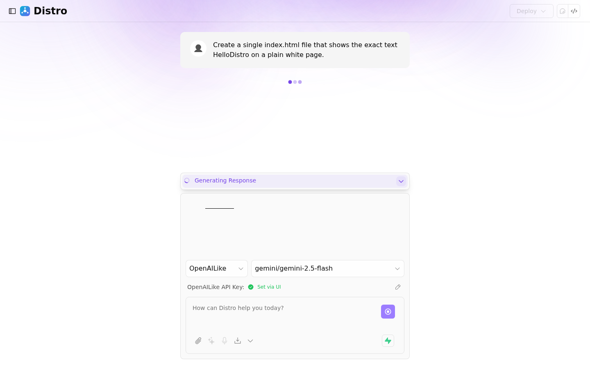

v1.0 · BuilderOps live
Describe an app.
Watch it get built — in your browser.
Distro is a self-hosted AI app-building platform: its agent writes, runs, previews, and iterates on a full-stack codebase live in your browser — no local dev environment, no cloud VM. It assembles bolt.diy (the in-browser IDE) and OmniRoute (the AI gateway) and operates them as one service.
$ git clone https://github.com/innotelinc/distro.git && cd distro && cp .env.example .env && ./scripts/bootstrap.sh
The whole build loop, in one tab.
Chat, code, run, preview, iterate — with your provider keys and your users' quotas under your control.
Chat-to-code agent
Describe an app in natural language and the agent writes, runs, previews, and iterates on a full-stack codebase.
WebContainer sandbox
npm install, dev servers, and terminals — Node.js runs in the tab with no cloud VM required.
Live preview & terminal
Iterate on a running app with an in-browser shell and instant reload as the agent edits files.
Keys never leave the server
The agent talks only to your self-hosted OmniRoute gateway — upstream provider keys live in one place, never in the browser.
Multi-tenant control plane
Accounts, one gateway key per user, quota and spend enforcement, an admin console, and an audit log.
SSO & billing, optional
Cerulean Authentik identity and Magnate subscriptions from the platform stack — wired in, off by default.
Two MIT upstreams, one service.
Distro assembles bolt.diy and OmniRoute and operates them as one service — the agent only ever talks to the gateway.
bolt.diy · MIT · pinned stable
The in-browser IDE — chat-to-code, WebContainer sandbox, live preview, file tree, terminal. Forked and rebranded into apps/web.
OmniRoute · MIT
The AI routing gateway: one OpenAI-compatible /v1/* endpoint in front of hundreds of upstream providers, with fallback and token/cost accounting.
Control plane
Multi-tenant layer: accounts, per-user gateway keys, quota enforcement, spend tracking, admin console, audit log.
The seam
bolt.diy's OpenAILike provider plugs straight into OmniRoute's endpoint — no custom adapter code. That seam is the whole integration.
# one command: secrets + gateway + web $ ./scripts/bootstrap.sh >> [gateway] OmniRoute online → http://127.0.0.1:20128 >> [web] Distro IDE online → http://127.0.0.1:5173 $ docker compose up -d --build web && make doctor all services healthy · gateway key wired # open the app → Start building (workspace lives at /app) # the model picker lists whatever your gateway exposes
See it build.
From the front door to a running app — the agent's reply streams in as files, installs, and dev servers.



Live on the stack.
Wildcard TLS through Nginx Proxy Manager, identity via Cerulean Authentik. The OmniRoute gateway also publishes on the LAN (dashboard + API keys on port 20128).
Roadmap.
v1.0 is shipped and verified on the live stack; the control-plane roadmap tracks what's next.
Gateway-only provider mode, full agent pipeline, multi-tenant control plane, Authentik SSO, HTTPS behind NPM.
shippedBilling hooks via Magnate subscriptions, if paid tiers come into scope.
nextElectron packaging promoted from inherited upstream config to a verified path.
later